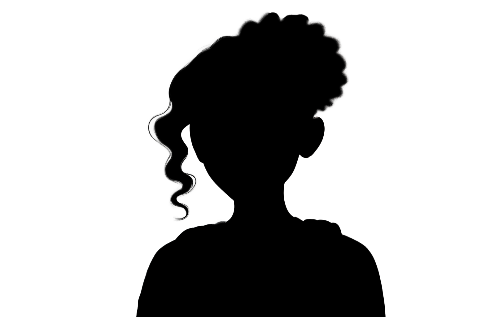

Have you ever had one of those days?
You slept in. You left half the things you needed at home.
It happens to everyone.
It happened to me...
go on...
Mr Andrews is
not
my favourite teacher.
next
Can you guess what my problem was?
maybe...
Ah well.
You don't understand.
Mr Andrews is
strict
.
Very strict.
It looked like I was in trouble.
Yikes!
Thank goodness for Kiran!
?
Phew!
If you borrow something...
You can keep it
You have to give it back
Does Kiran want this piece of paper back?
Yes, of course!
No, I don't think so.
What does Kiran want?
A new piece of paper
Nothing
Today, I borrowed a piece of paper from Kiran. Next time she needs a piece of paper, I will give her one from my notepad.
That seems fair. She helped me today, and I will help her another day.
↺